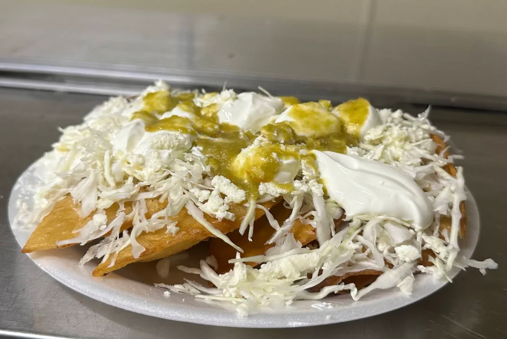
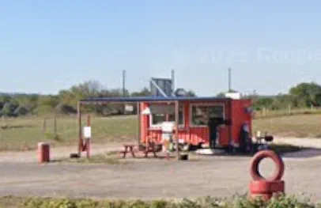

The one to try first
Best tortas in town. Little Rabbit42, Google review
Comida casera off Highway 969. Tortas, gorditas, breakfast tacos, and caldos, all made to order in a little red trailer just east of Austin.

Made to order, the way it's made at home. Here's what people drive out for.
Most folks spend about $10 to $20 a head.
Best tortas in town.Little Rabbit42
Delicious food, pure Mexican flavor.Eleazar Martinez
4.3 stars on Google, across 7 reviews.

Roadside stand on FM 969.